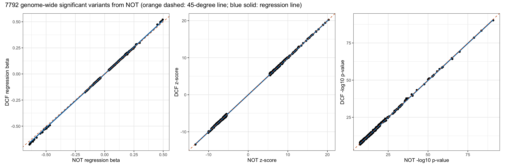

Last updated: 2025-04-09
Checks: 7 0
Knit directory: scratch/
This reproducible R Markdown analysis was created with workflowr (version 1.7.1). The Checks tab describes the reproducibility checks that were applied when the results were created. The Past versions tab lists the development history.
Great! Since the R Markdown file has been committed to the Git repository, you know the exact version of the code that produced these results.
Great job! The global environment was empty. Objects defined in the global environment can affect the analysis in your R Markdown file in unknown ways. For reproduciblity it’s best to always run the code in an empty environment.
The command set.seed(20250402) was run prior to running
the code in the R Markdown file. Setting a seed ensures that any results
that rely on randomness, e.g. subsampling or permutations, are
reproducible.
Great job! Recording the operating system, R version, and package versions is critical for reproducibility.
Nice! There were no cached chunks for this analysis, so you can be confident that you successfully produced the results during this run.
Great job! Using relative paths to the files within your workflowr project makes it easier to run your code on other machines.
Great! You are using Git for version control. Tracking code development and connecting the code version to the results is critical for reproducibility.
The results in this page were generated with repository version 0fbbabd. See the Past versions tab to see a history of the changes made to the R Markdown and HTML files.
Note that you need to be careful to ensure that all relevant files for
the analysis have been committed to Git prior to generating the results
(you can use wflow_publish or
wflow_git_commit). workflowr only checks the R Markdown
file, but you know if there are other scripts or data files that it
depends on. Below is the status of the Git repository when the results
were generated:
Ignored files:
Ignored: .Rhistory
Ignored: .Rproj.user/
Note that any generated files, e.g. HTML, png, CSS, etc., are not included in this status report because it is ok for generated content to have uncommitted changes.
These are the previous versions of the repository in which changes were
made to the R Markdown
(analysis/compare_not_with_dcf_07.Rmd) and HTML
(docs/compare_not_with_dcf_07.html) files. If you’ve
configured a remote Git repository (see ?wflow_git_remote),
click on the hyperlinks in the table below to view the files as they
were in that past version.
| File | Version | Author | Date | Message |
|---|---|---|---|---|
| Rmd | 0fbbabd | Xiang Zhu | 2025-04-09 | wflow_publish("analysis/compare_not_with_dcf_07.Rmd") |
Total number of rows in new data frame: 49076793 Total number of rows in old data frame: 49562165 Total number of rows after joining two data frames: 49072977 Number of unique variant IDs shared by two data frames: 48848837 Number of unique variant IDs after joining two data frames: 48848835 Look at the GWAS results 2 shared variant IDs outside the joint data frame: CHROM GENPOS ID ALLELE0 ALLELE1 dcf_A1FREQ dcf_INFO dcf_N
<int> <int> <char> <char> <char> <num> <num> <int>
1: 5 134668743 rs907339653 C T 1.18255e-04 0.802187 44006
2: 12 38796898 rs566175979 C G 5.68104e-05 0.866659 44006
dcf_BETA dcf_SE dcf_CHISQ dcf_LOG10P
<num> <num> <num> <num>
1: 0.6216170 0.334790 3.4474700 1.1982600
2: 0.0844295 0.464733 0.0330052 0.0676078 CHROM GENPOS ID ALLELE0 ALLELE1 not_A1FREQ not_INFO not_N
<int> <int> <char> <char> <char> <num> <num> <int>
1: 5 134668743 rs907339653 C A 0.000071247 0.817927 44006
2: 12 38796898 rs566175979 C T 0.000262843 0.800463 44006
not_BETA not_SE not_CHISQ not_LOG10P
<num> <num> <num> <num>
1: 0.571465 0.434256 1.73175 0.725410
2: 0.262299 0.220765 1.41167 0.629339A1FREQ values are identical between new (dcf) and old (not) data frames. INFO values are identical between new (dcf) and old (not) data frames. N values are identical between new (dcf) and old (not) data frames. Pearson correlation between dcf_BETA in new and not_BETA in old:
Estimate = 0.9937204, 95% CI = [0.99371689, 0.9937239]
Regression coefficients for dcf_BETA (new ~ old):
Estimate Std. Error t value Pr(>|t|)
(Intercept) -5.643834e-05 4.235514e-06 -13.32503 1.656025e-40
x 1.017798e+00 1.635966e-05 62213.86573 0.000000e+00
Pearson correlation between dcf_SE in new and not_SE in old:
Estimate = 0.99988422, 95% CI = [0.99988415, 0.99988428]
Regression coefficients for dcf_SE (new ~ old):
Estimate Std. Error t value Pr(>|t|)
(Intercept) 6.925956e-05 5.753205e-07 120.3843 0
x 1.022857e+00 2.222143e-06 460302.0492 0
Pearson correlation between dcf_CHISQ in new and not_CHISQ in old:
Estimate = 0.99112287, 95% CI = [0.99111792, 0.99112781]
Regression coefficients for dcf_CHISQ (new ~ old):
Estimate Std. Error t value Pr(>|t|)
(Intercept) 0.009974101 3.811153e-05 261.7082 0
x 0.993062300 1.901574e-05 52223.1793 0
Pearson correlation between dcf_LOG10P in new and not_LOG10P in old:
Estimate = 0.98944912, 95% CI = [0.98944325, 0.98945499]
Regression coefficients for dcf_LOG10P (new ~ old):
Estimate Std. Error t value Pr(>|t|)
(Intercept) 0.004759025 1.376591e-05 345.711 0
x 0.991189251 2.071823e-05 47841.405 0
Pearson correlation between dcf_ZSCORE in new and not_ZSCORE in old:
Estimate = 0.99410134, 95% CI = [0.99409805, 0.99410463]
Regression coefficients for dcf_ZSCORE (new ~ old):
Estimate Std. Error t value Pr(>|t|)
(Intercept) -0.0001356279 1.588024e-05 -8.540671 1.334482e-17
x 0.9953764250 1.550193e-05 64209.835452 0.000000e+00dcfPearson correlation between dcf_BETA in new and not_BETA in old:
Estimate = 0.99988527, 95% CI = [0.99988008, 0.99989022]
Regression coefficients for dcf_BETA (new ~ old):
Estimate Std. Error t value Pr(>|t|)
(Intercept) -0.0004050455 1.487484e-05 -27.23025 4.095538e-156
x 1.0284796817 1.756108e-04 5856.58554 0.000000e+00
Pearson correlation between dcf_SE in new and not_SE in old:
Estimate = 0.9999949, 95% CI = [0.99999467, 0.99999512]
Regression coefficients for dcf_SE (new ~ old):
Estimate Std. Error t value Pr(>|t|)
(Intercept) 1.308591e-05 3.847609e-07 34.01049 1.11462e-236
x 1.020781e+00 3.673254e-05 27789.56540 0.00000e+00
Pearson correlation between dcf_CHISQ in new and not_CHISQ in old:
Estimate = 0.99890775, 95% CI = [0.99885843, 0.99895493]
Regression coefficients for dcf_CHISQ (new ~ old):
Estimate Std. Error t value Pr(>|t|)
(Intercept) 0.2816255 0.0331106731 8.505581 2.141177e-17
x 0.9930212 0.0005235388 1896.748148 0.000000e+00
Pearson correlation between dcf_LOG10P in new and not_LOG10P in old:
Estimate = 0.99888774, 95% CI = [0.99883752, 0.99893579]
Regression coefficients for dcf_LOG10P (new ~ old):
Estimate Std. Error t value Pr(>|t|)
(Intercept) 0.07014048 0.0077255760 9.078997 1.364712e-19
x 0.99285542 0.0005282313 1879.584563 0.000000e+00
Pearson correlation between dcf_ZSCORE in new and not_ZSCORE in old:
Estimate = 0.99987385, 95% CI = [0.99986815, 0.9998793]
Regression coefficients for dcf_ZSCORE (new ~ old):
Estimate Std. Error t value Pr(>|t|)
(Intercept) -0.02006949 0.0013403355 -14.97348 5.317352e-50
x 1.00033705 0.0001791022 5585.28504 0.000000e+00notPearson correlation between dcf_BETA in new and not_BETA in old:
Estimate = 0.99988513, 95% CI = [0.99987991, 0.99989012]
Regression coefficients for dcf_BETA (new ~ old):
Estimate Std. Error t value Pr(>|t|)
(Intercept) -0.0004263725 1.502193e-05 -28.38334 9.990194e-169
x 1.0280936458 1.765730e-04 5822.48591 0.000000e+00
Pearson correlation between dcf_SE in new and not_SE in old:
Estimate = 0.99999485, 95% CI = [0.99999462, 0.99999508]
Regression coefficients for dcf_SE (new ~ old):
Estimate Std. Error t value Pr(>|t|)
(Intercept) 1.309507e-05 3.897208e-07 33.60117 2.845851e-231
x 1.020788e+00 3.710348e-05 27511.92506 0.000000e+00
Pearson correlation between dcf_CHISQ in new and not_CHISQ in old:
Estimate = 0.9989817, 95% CI = [0.99893548, 0.99902592]
Regression coefficients for dcf_CHISQ (new ~ old):
Estimate Std. Error t value Pr(>|t|)
(Intercept) -0.04343621 0.032402779 -1.340509 0.1801191
x 0.99672660 0.000510026 1954.266410 0.0000000
Pearson correlation between dcf_LOG10P in new and not_LOG10P in old:
Estimate = 0.99896401, 95% CI = [0.99891698, 0.99900899]
Regression coefficients for dcf_LOG10P (new ~ old):
Estimate Std. Error t value Pr(>|t|)
(Intercept) -0.006170134 0.0075566786 -0.816514 0.4142312
x 0.996663944 0.0005144124 1937.480326 0.0000000
Pearson correlation between dcf_ZSCORE in new and not_ZSCORE in old:
Estimate = 0.99988753, 95% CI = [0.99988242, 0.99989241]
Regression coefficients for dcf_ZSCORE (new ~ old):
Estimate Std. Error t value Pr(>|t|)
(Intercept) -0.02043681 0.0012748144 -16.0312 6.257619e-57
x 0.99934390 0.0001698326 5884.2880 0.000000e+00 DCF p <= 5e-8 DCF p > 5e-8
NOT p <= 5e-8 7580 212
NOT p > 5e-8 294 49064891
Fisher's Exact Test for Count Data
data: contingency_table
p-value < 2.2e-16
alternative hypothesis: true odds ratio is not equal to 1
95 percent confidence interval:
8.402051e+03 4.503600e+15
sample estimates:
odds ratio
4.5036e+15 
R version 4.4.3 (2025-02-28)
Platform: aarch64-apple-darwin20
Running under: macOS Sequoia 15.4
Matrix products: default
BLAS: /Library/Frameworks/R.framework/Versions/4.4-arm64/Resources/lib/libRblas.0.dylib
LAPACK: /Library/Frameworks/R.framework/Versions/4.4-arm64/Resources/lib/libRlapack.dylib; LAPACK version 3.12.0
locale:
[1] en_US.UTF-8/en_US.UTF-8/en_US.UTF-8/C/en_US.UTF-8/en_US.UTF-8
time zone: America/Los_Angeles
tzcode source: internal
attached base packages:
[1] stats graphics grDevices utils datasets methods base
other attached packages:
[1] xzTools_0.0.0.9000 patchwork_1.3.0 ggplot2_3.5.2 dplyr_1.1.4
[5] data.table_1.17.0 workflowr_1.7.1
loaded via a namespace (and not attached):
[1] sass_0.4.9 generics_0.1.3 lattice_0.22-6 stringi_1.8.7
[5] digest_0.6.37 magrittr_2.0.3 evaluate_1.0.3 grid_4.4.3
[9] fastmap_1.2.0 Matrix_1.7-2 R.oo_1.27.0 rprojroot_2.0.4
[13] jsonlite_1.9.1 processx_3.8.6 R.utils_2.12.3 whisker_0.4.1
[17] ps_1.9.0 promises_1.3.2 mgcv_1.9-1 httr_1.4.7
[21] scales_1.3.0 jquerylib_0.1.4 cli_3.6.4 rlang_1.1.5
[25] R.methodsS3_1.8.2 splines_4.4.3 munsell_0.5.1 withr_3.0.2
[29] cachem_1.1.0 yaml_2.3.10 tools_4.4.3 colorspace_2.1-1
[33] httpuv_1.6.15 vctrs_0.6.5 R6_2.6.1 lifecycle_1.0.4
[37] git2r_0.35.0 stringr_1.5.1 fs_1.6.5 pkgconfig_2.0.3
[41] callr_3.7.6 pillar_1.10.2 bslib_0.9.0 later_1.4.1
[45] gtable_0.3.6 glue_1.8.0 Rcpp_1.0.14 xfun_0.51
[49] tibble_3.2.1 tidyselect_1.2.1 rstudioapi_0.17.1 knitr_1.50
[53] farver_2.1.2 nlme_3.1-167 htmltools_0.5.8.1 labeling_0.4.3
[57] rmarkdown_2.29 compiler_4.4.3 getPass_0.2-4